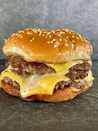

Home page
Smashburger

Easy Delicious Smashburger
This smashburger recipe is all about bold flavor and irresistible
texture. By pressing seasoned beef onto a hot skillet, each patty
develops a perfectly crispy, caramelized crust while staying juicy
and tender inside. The high-heat smash technique locks in flavor,
creating a rich, savory bite that’s elevated even further with a
layer of melted cheese. Fast, satisfying, and packed with
mouthwatering depth, this is the kind of burger that keeps you
coming back for more.
Ingredients
- Hamburger buns
- Ground beef
- ketcup
- Worcestershire sauce
- Garlic powder
- Onion powder
- pepper
- Salt
- Cheese
- Whatever toppings you want on your burger
Steps
- Mix the ground beef, ketchup, Worcestershire sauce, garlic powder
onion powder, and pepper together in a bowl.
- Form the mixture in to 3oz balls and rest in the fridge for
15-30 minutes.
- Form the meatballs into puck shape.
- Cook on a flat-top.
- Assemble your burger